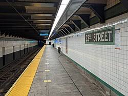

The Last Train Home

You decide to ignore the strange feeling and stay near the stairs. After a few minutes, the flickering lights stop and the station slowly begins to feel normal again.
A worker eventually appears, and the silence is broken by the usual sounds of the city returning. You explain what happened, but everything now feels ordinary.
You make your way home safely.
Ending
You made it home.